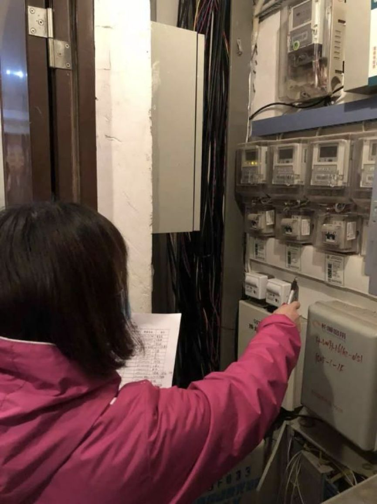

7万例！中国疾控中心发迄今最大新冠病例分析：3019名医护感染，首次描述肺炎发病流行曲线
原文链接 备份链接 2 月 17 日，《中华流行病学杂志》杂志上，中国疾病预防控制中心新型冠状病毒肺炎应急响应机制流行病学组最新发表新冠肺炎研究。 在对截至 2020 年 2 月 11 日中国内地报告的 超过 7 万病例的流行病学特征进行 …
岛语

非常时期，武汉成了全国人民挂念、祈福的城市。封城后，武汉人民的真实生活是什么样？ 武汉在发生哪些变化？
正和岛自1月26日起特别推出“叶青专栏”。叶青是一位定居武汉40年的市民，也是一名学者和官员。在过往多期的专栏文章里，叶青实时记录了很多观察和亲历的事件，并提了很多建设性的建议，深受读者好评。
这将是一份宝贵的史料。感谢他，我们得以更真切地感知到武汉疫情全方面的进展。让我们一起为武汉加油！
*作者 | 叶青 正和岛蓝色岛邻*
排版 | 张珍珍 正和岛湖北岛丁
来源 | 正和岛APP
01
新增死亡病例低于100
17日，正月二十四，依然是晴空万里。
17日，全国新增确诊病例1886例，新增重症病例1097例，新增死亡病例98例（湖北93例，河南3例，河北、湖南各1例），而16日新增死亡病例105例。
截至17日，全国确诊病例58016例（其中重症病例11741例），累计治愈出院病例12552例（北京核增7例），累计死亡病例1868例，现有疑似病例6242例。
17日，湖北新增确诊病例1807例（武汉1600例），16日是1933例。新增死亡病例93例（武汉72例，16日武汉76例），现有确诊病例50338例（武汉37152例），其中重症病例10970例（武汉9222例）。
累计死亡病例1789例（武汉1381例），累计确诊病例59989例（武汉42752例）。
全国除湖北以外地区新增确诊病例79例，连续第14日呈下降态势。前几日这一数据分别为：890例（3日）、731例（4日）、707例（(5日)、696例（6日）、558例（7日）、509例（8日）、444例（9日）、381例（10日）、377例（11日）、312例（12日）、267例（13日）、221例（14日）、166例（15日）、115例（16日）。
这些数字的后面，是全国支持湖北的结果。
17日，国务院联防联控机制于北京召开新型冠状病毒肺炎主题新闻发布会反映：3万余名医务人员，主要来自于呼吸、感染、重症等专业，有1.1万重症专业医务人员负责重症的救治工作。这1.1万的重症医务人员已经接近全国重症医务人员资源的10%。
02
全国两会要推迟
17日召开的十三届全国人大常委会第四十七次委员长会议决定，2月24日举行的全国人大常委会会议将审议关于推迟召开第十三届全国人民代表大会第三次会议的决定草案。
此前召开的政协第十三届全国委员会第三十三次主席会议研究了关于推迟召开政协第十三届全国委员会第三次会议和常务委员会第十次会议的有关事项等。
当前，疫情形势仍然十分严峻，疫情防控工作到了最吃劲的关键阶段。推迟全国两会，也是为了落实好把人民群众生命安全和身体健康放在第一位的要求。
每年全国两会的具体召开时间，宪法和相关法律法规没有作出明确规定。
早期的全国人民代表大会会议、政协全国委员会全体会议，召开时间比较不规律。1959年，全国人大会议和全国政协会议开始在相差不多的一个时间段内“套开”。1975年人大开会，政协未开会，逐渐形成了“两会”这一特定称谓。
1985年起，全国两会的召开时间也基本稳定在了每年3月，并逐渐从3月下旬前移至3月上旬（其中全国政协八届五次会议在1997年2月27日开幕）。从1998年起，全国人大会议和全国政协会议分别于每年的3月5日和3月3日开幕。
我2003-2012年当十届、十一届全国人大代表时，没有变过。
17日，中央应对新冠肺炎疫情工作领导小组召开会议。有三个内容我们特别关心。都是要紧的事情。
一是武汉市和湖北省要继续加大排查力度，扩大床位供给。
二是国家根据救治需要再增派医疗力量支援。
三是保障好武汉和湖北防控物资和重症救治设备。
17日下午，国务院联防联控机制召开新闻发布会。
科技部生物中心副主任孙燕荣表示：磷酸氯喹对新冠肺炎有疗效。
国家中医药管理局科技司司长李昱介绍：清肺排毒汤具有良好的临床疗效和救治前景。
好药终于来了。
民政部印发了《民政部办公厅关于进一步加强生活无着流浪乞讨人员救助管理机构及对象新型冠状病毒肺炎疫情防控工作的紧急通知》，发布了《生活无着的流浪乞讨人员救助管理机构新冠肺炎疫情防控工作指南》。
我对这个新闻特别感兴趣。
2月7日，我提出《民政部门关注“日光族”的建议》：
目前，除了关注患者、医护人员、社区干部等之外，还要关注低收入者、无收入的流浪者。
看到一篇文章，各地“封城停业”以来，一些极低收入者怎么办？比如，平时靠乞讨为生的，现在路上没有了行人。收废旧物品者，现在废品收购站都关门了，今天的早餐在哪里？
在无人的街道上，近日我曾经看见一个人，没戴口罩，头发蓬乱、胡子拉碴，小四轮车上堆满矿泉水瓶子，在无助地先走。在哪里可以收他的废品？
我把这些人称为“日光族”。即赚即花即光。靠收破烂、打零工，应付每天的花销。过去还可以勉强度日。现在则没有办法了。
建议各级民政部门要关注、要安置。
现在真的有人管。
14日，国新办就疫情防控最新进展特别是关爱医务人员举措发布会上表明，医护和相关工作人员因为履行工作职责感染新冠肺炎或者是因感染新冠肺炎死亡的，明确认定为工伤，依法享受工伤保险待遇。
这显然是不够的。网民希望能够定为烈士。
果然，退役军人事务部、中央军委政治工作部联合印发《关于妥善做好新冠肺炎疫情防控牺牲人员烈士褒扬工作的通知》，符合烈士评定（批准）条件的人员，应评定（批准）为烈士。
17日下午，钟南山介绍，其团队建立的数学模型将国家强有力干预措施和春节后务工人员返程高峰两个变量纳入考量，这两个变量将改变疾病的自然发展规律。根据该模型预计，2月中下旬全国病例数将达到峰值，但并不意味着达到峰值后马上下降。但是，疫情还有可能随着务工人员返程再次出现新的高峰。
这个警告是合理的。
钟南山表示，武汉仍处于高患病率和高病死率，病人总数占全国80%，病死率占全国95%以上。
对于新冠肺炎对于经济的影响，各类专家都陆续提出看法。
15日，由中国发展研究基金会主办的博智宏观论坛线上专题研讨会通过网络平台召开，全国政协经济委员会副主任、国务院发展研究中心原副主任刘世锦认为，这次疫情对我国经济社会发展中深层矛盾问题提供了一次难得的反思、纠错、改革的机会。
应争取二月底基本控住疫情，仅涉及到工业、建筑业、农业。国民经济全局不至于伤筋动骨。
如果延伸到三月以后，影响就是长期生产力，很多企业执行不了合约、发不出工资，现金流撑不住，就要关门破产。这时候就是伤筋动骨了。
所以，不能使一个意外短期冲击（黑天鹅），变成中期甚至长期冲击。
对外经济贸易大学国际商学院发布的调研报告也证明了这个观点。参与调研的企业中，69.23%的企业现金流能够维持3个月以上，43.83%能够维持在半年以上。若疫情在三个月内得不到有效遏制，将有企业面临破产风险。
03
什么是集中拉网式大排查？
17日，湖北省新型冠状病毒感染肺炎防控指挥部就全面开展发热病人排查核查工作有关事项通告，全面排查1月20日以来，各医疗机构就诊的发热病人、通过实体药店购买或网上订购降热退烧止咳类药品人员，掌握上述人员就诊或购药时间、姓名、公民身份号码、现居住地址、联系电话等信息，并组织上门核实、后续检测、隔离收治等工作。
这是一种倒查的办法。
在武汉，则进入了三天攻坚期。
17日起，全市总动员，开始开展为期3天的集中拉网式大排查。各种方式，各显神通。
数窗户。16日晚，社区网格员全部下到楼栋，挨家挨户数楼栋住户亮灯情况，对比前期排查数据，查漏补缺。
上门问。“您好，现在您家里有几个人在家？”“家人身体怎么样？”“今天测的体温数据是多少？”……17日一早，江岸区台北街道桃源社区以网格进行划分，每个网格分别安排网格员、社区群干、下沉干部、志愿者各一人，展开了拉网式排查，挨家挨户敲门询问，并针对新增的住户名单进行重点询问。
查电表。有人住的房子与没人住的房子，电表数据是不一样的。

机器问。东湖高新区九峰街德欣里社区住户陆续接到了东湖高新区的人工智能语音随访，这段对话，通过电话线，实时传输到位于3公里外的东湖高新区政务服务局（大数据管理局）的系统后台中心，并被转换成文字记录在电脑内。
社区工作人员通过登陆帐号、查看外呼反馈的结果数据后，发现对话里有“体温计坏了”这一关键信息，工作人员赶紧带上体温计上门排查。
该系统可同时拨打900个电话。以16日数据为例，当日对关东街32个社区进行智能外呼，共呼叫172616人，成功接听121059人，接通率70.1%；防疫宣传短信通知154128人次；排查出发热居民69人，咳嗽乏力331人。
机器人是比人厉害。没有这个系统的，只好用最简单的办法：人工打电话，记录在表格上。
智慧平台。“智慧基层社会治理综合支撑平台”也在拥有1315户的光谷佛祖岭B社区运行着。依托人脸识别摄像头，外来人口无法从出入口进入该社区。
在封闭小区的情况下，如果违规上街，那就不客气了。
16日晚18时许，邹某（男，44岁，住洪山区欢乐大道某小区）拒不配合小区封控管理，称省、市小区封闭管理有关规定违法，欲驾车强行进入小区，并谩骂、推搡执勤民警。公安机关依法将其行政拘留10日，并处罚款500元。
17日上午10时许，青山公安分局民警和社区干部在八大家花园小区附近劝导一名男子佩戴口罩时，该男子拒不配合，不断挑衅民警，扬言“先戴手铐才戴口罩”，造成附近居民围观。民警反复劝说无效，依法对其实行强制传唤，并处以行政拘留五日处罚。我看到这个视频。该人非常无理。
完全封闭小区，买菜自然就成为一个大问题。各种办法也是各显神通。比如，买菜要有通行证，没有听说过吧。
汉阳区新冠肺炎防控指挥部发布关于重点大型超市使用居民通行证的指挥部令(第46号)，规定从即日起，凡是进入超市购物者，需持有汉阳区新冠肺炎防控指挥部办公室统一印制的《居民通行证》。未持《居民通行证》的居民，一律不得放行进入超市（营业时间：上午10：00-17：00）。如有违反，按照疫情防控工作处于战时状态的相关要求，依法依规严处。
这是第一次听说。当然这种方法不会长久。通行证就不是很干净的。
有的区的超市干脆不接待个人顾客。
从17日起，青山区内所有大中超市及商业门店只接受团购客户，不再对个人销售生活物资。
17日起，武昌区商超只接受团购客户。居民如有购物需求，可与居住社区联系，参加社区组团购物。由中商连锁超市为主要蔬菜配送商，负责对全区14个街道及社区进行全覆盖配送。
在抗疫之中，也不要忘记政策的扶持。
武汉市国资委批复武汉国资公司，支持其向证监会申报注册发行期限不超过10年、额度不超过50亿元的抗疫救灾专题公司债券。
武汉市发改委在官方网站发布上报新冠肺炎疫情防控重点保障企业名单通知，各区按照应报尽报原则，组织符合“支持范围”企业申报。据悉，列入名单企业将享受到优惠贷款。
这是企业的机会。是湖北“18条”的具体体现。
04
提拔与关爱
湖北发布《关于进一步关爱和激励新冠肺炎疫情防控一线医务人员的若干措施》提出，一线医务人员子女2020年秋季入学幼儿园的，优先安排到辖区内公益普惠性幼儿园就读；2020年秋季学期升入小学或升入初中就读的，由户籍地所在县(市、区)教育行政部门统筹，在学位允许的前提下，按就近就便的原则，优先安排到相对优质的学校入学；2020年参加中考的，有关市州可在其录取总分基础上增加10分后参加中考招生录取。
2020年，一线医务人员子女参加普通高考报考省属本专科高校被录取的，由高校根据考生意愿在同批次优先调整专业；安排省内部分优质高职院校专项招收一线医务人员子女，实行计划单列。
将医务人员在疫情防控工作中的表现作为人才评价和人事管理的重要依据，对作出贡献的医务人员在职称评审、人才项目评选和事业单位岗位聘用时予以倾斜，优先推荐、优先晋升。
与别的省相比，尽管晚了几天，还是很温暖的。
据武汉市委员会组织部微信公众号17日发布消息，有12名党员干部被火线提拔：
唐雯，女，中共党员，现任江岸区台北街工委副书记，拟任江岸区台北街道办事处主任。
胡喜元，男，中共党员，现任江岸区永清街公共管理办公室主任，拟任江岸区永清街道一级主任科员。
李继国，男，中共党员，现任江岸区永清街公共安全办公室主任，拟任江岸区永清街道一级主任科员。
杨军，男，中共党员，现任江汉区民权街区域发展办副主任，拟任江汉区民权街区域发展办主任。
饶玥，女，中共党员，现任江汉区民族街党建办副主任，拟任江汉区民族街党建办主任。
王劲乐，男，中共党员，现任江汉区常青街党建办副主任，拟任江汉区常青街党建办主任。
柯敏，男，中共党员，现任汉阳区委督查室主任(副处级)，拟任汉阳区机关事务服务中心主任。
熊继华，男，中共党员，现任汉阳区江堤街公共安全办公室主任，拟任江堤街办事处副主任。
陈正威，男，中共党员，现任汉阳区龙阳街公共管理办公室主任，拟任五里墩街办事处副主任。
任超，男，中共党员，现任江夏区全域旅游中心副科级干部，拟任江夏区全域旅游中心办公室主任。
何银，女，中共党员，现任江夏区企业和人才服务中心干部(副科级)，拟任江夏区企业和人才服务中心企业服务科科长。
赖成林，男，中共党员，现任市海绵城市和综合管廊建设管理站副站长，拟任市海绵城市和综合管廊建设管理站站长。
武汉的力度还是不够。前几天，天津提拔了两位局级干部。江苏一口气提了5位。
17日，江苏省委组织部根据《党政领导干部选拔任用工作条例》规定，对下列同志进行任职前公示。
李少冬，现任省卫生健康委员会副主任、党组成员。拟晋升为省卫生健康委员会一级巡视员。
邱泽森，现任省卫生健康委员会二级巡视员。拟任省卫生健康委员会副主任、党组成员，试用期一年。
吴红辉，现任省卫生健康委员会健康促进处处长、一级调研员。拟晋升为省卫生健康委员会二级巡视员。
尚建荣，现任省公安厅党委副书记、副厅长（正厅级）。拟任省公安厅常务副厅长。
常和平，现任省公安厅副厅长、党委委员，南京市公安局局长、党委书记。拟推荐提名为南京市副市长人选。
这才叫大力度。
毫不吝啬，江苏还把一个新任的副省级干部，送到湖北了参加抗疫战斗第一线来锻炼。
江苏镇江市委书记惠建林，火线出任省政府党组成员，并担任支援湖北前方指挥部总指挥，江苏的前方指挥部驻地为湖北黄石，明天即赴鄂开展工作。
江苏可以说是抗疫、生产两不误。
截至16日，江苏省规模以上工业企业复工数达29230家，复工面达65%，较前一天提高8个百分点；复工人数324万人，是正常用工数的57%；规模以上工业企业复工数占全国17%，为各省份首位。
05
感动的故事也让人流泪
这几天，微信上流传一个悲伤的故事。
湖北电影制片厂导演、影视部主任常凯与父母及姐姐因感染新冠肺炎，在17天内相继离世。常凯与姐姐于14日同日去世，他的父母分别于上月27日、本月2日去世。常凯父母都是湖北武汉同济医院教授。数亿网友替仍在留医的常凯妻子打气，希望她早日康复。
有网民留言：“我们只是被困在家里，有的人却永远困在了2020年”。
这大概是2020年这一场新冠肺炎中，最让人心痛的消息。
而在武汉抗击新冠肺炎的战斗中，也有一些让人流泪的感人故事。
17日，入住省中医院的358位新冠肺炎患者收到了医院发放的生活用品“爱心包”，里面有卫生纸、牙刷、牙膏、毛巾、洗发膏、沐浴露、洗衣粉和女性生理用品等生活用品，不少患者为这一暖心服务点赞。
业主一般都是反对物业多收钱的。而此时的汉口一个小区107位业主，却给物业“发奖金”。
在疫情发生之后，物业对各项工作更加上心。物业联合业主通过各种买菜模式——蔬菜直通车、联系合作社直供蔬菜等，让这个小区2153户、近万居民吃菜，多了一道平稳的保障。
物业人员的尽职尽责、贴心便民，也让业主竭诚相待。
发起人、热心业主冯健华告诉记者，很多业主“私信”他，请他发起募集，“不能光为物业点赞，来点实在的”。
于是，他在业主群里写下了一段话@所有人：
“我们安好生活的背后，总有一些人为我们负重前行！我们晋合邻居们的安逸，是所有物业同志们不辞辛劳，舍小家为大家！春节假期，又适逢疫情，本来自然减员的物业人员，现在能顶上来的人更是捉襟见肘。不管是保安也好，保洁阿姨也好，看到过年以来在岗的总是这些人，我心里总有些难受。这里，我想建议一下：咱们所有街坊邻居捐点款（多少是个心意），给物业同志们做加班费或加餐费。他们太不容易了！”
12日，不到12个小时，捐款已经达到了59646元。最后，15栋一单元的老两口追加了354元，凑足了6万元。
有趣的是，物业公司也不含糊，搞了一个明细分配表让人叹服。这个将来可以写到社会治理与和谐社会的教案中。

疫情发生以来，位于武汉国际会展中心边上的汉藏文化交流中心为武汉西藏中学、湖北中西医结合医院、江汉交警大队、有关街道、社区共捐赠了4万个口罩，并承担起江汉“方舱医院”400余名医护人员早中晚三餐的供应。
这家餐厅，我去过几次，面积不大，供应400余人的三餐，难能可贵。
光谷步行街Wakanda咖啡店内，7名员工正忙碌着，周围摆满了纸箱和咖啡打包袋。
咖啡店有一群老顾客——湖北省中医院的医护人员，不乏每天至少喝一杯以及下班也要喝上一杯提神的重度咖啡爱好者。咖啡店关门了，他们喝什么？老板产生了顾虑。
于是，从1月26日开始，咖啡店临时组建的七人小组，每天为湖北省中医院光谷园区和花园山院区免费供应500杯咖啡。
众多网友通过外卖App找到这家店，通过“云买单”的方式表达对这份善意和这场战“疫”的支持。短短几天，买单总金额竟已达120多万元。
“在后台发现款项的时候都懵了，我们只是在做一件我们认为该做的事，没想到背后那么多人支持我们，非常感动。”老板这样说。
“你守护他们，我们守护你。”“感谢你们让小人物在‘战疫’大背景下，也有机会支持前线。”“等疫情结束，春暖花开、樱花绽放的时候，一定来店里喝咖啡，那味道一定香醇甘甜！”网友们的话，鼓舞着每一个人。
为了感念网友支持，咖啡店的小伙伴们，坚持在每杯咖啡上手写祝福语，并附上捐赠这杯咖啡的网友名字。

这让我想到待用快餐。
2013年4月12日微博网友陈里在微博发起@待用快餐的行动，提倡“富而有爱，贫而有助，待用公益，尊严相助”的爱心理念。类似于欧洲的“待用咖啡”概念。

待用快餐这种“微慈善”背后的社会意义有如下两方面：一方面，它通过向经济困难群体和需要帮忙的人免费提供相应的帮助，对他们产生实实在在帮助的同时，也让他们感受到了来自社会的温暖与尊重；另一方面，它能够在更大范围内传递公益的力量，慈善的温暖，能触动每个人心中的善念。
疫情过后，希望每一家餐馆的门口，都有一个摆满已经付过钱的食品，等待着需要者的选用。
06
小结
悲伤的故事让人警醒。
感人的故事每天都在发生。
经过风雪的武汉，更应该坚强。
希望死亡病例数越来越小。

活着，成为当下中国民营企业的最高纲领！
如何打赢2020“生死之战”？她亲历阿里抗击非典，并带领创业酵母团队用七天时间快速完成业务转型和架构调整。
CEO如何深度思考与认知迭代，听张丽俊老师倾囊相授（识别图中二维码，即可收听）
**报名咨询：正和岛张珍珍**
18511280817

原文链接 备份链接 2 月 17 日，《中华流行病学杂志》杂志上，中国疾病预防控制中心新型冠状病毒肺炎应急响应机制流行病学组最新发表新冠肺炎研究。 在对截至 2020 年 2 月 11 日中国内地报告的 超过 7 万病例的流行病学特征进行 …
原文链接 备份链接 【财新网】（记者 丁捷 综合）距离新冠肺炎的出现迄今已经超两月。病毒从何而来尚未明晰。2月16日，中科院武汉病毒研究所发布声明，辟谣“零号病人”。此外，全国前两例感染患者遗体解剖完成，这两具由解剖获得的新冠肺炎病理目 …
原文链接 备份链接 岛语 非常时期，武汉成了全国人民挂念、祈福的城市。封城后，武汉人民的真实生活是什么样？ 正和岛自1月26日起特别推出《叶青：我在武汉疫区的第N天》专栏。叶青是一位定居武汉40年的市民，也是一名学者和官员。接下来的一段时 …
原文链接 备份链接 【财新网】（记者 黄蕙昭 综合）武汉市中心医院门前放满花束。7日凌晨3点48分，武汉中心医院官微发布李文亮医生抢救无效过世的消息。当日，手持花束的市民自发前往武汉中心医院，悼念在工作岗位被感染的李文亮医生。他曾因“发 …
原文链接 备份链接 【财新网】（记者 丁捷 综合）新型冠状病毒肺炎感染人数快速上升。根据国家卫健委数据，截至1月29日24时，中国累计报告确诊病例7711例，过去一天新增1737例确诊病例，西藏已出现首例确诊病例。新增死亡38例，新增疑 …